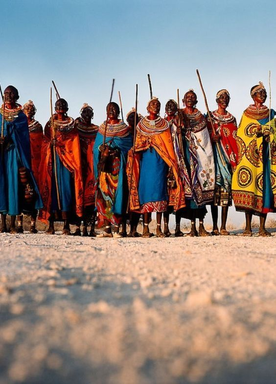
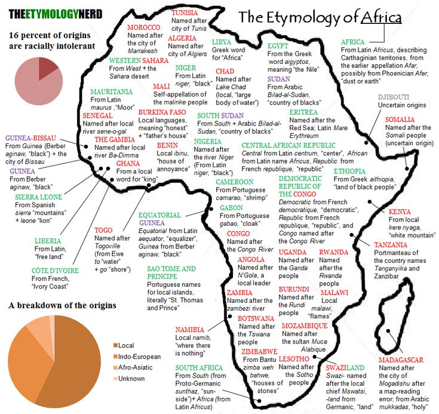
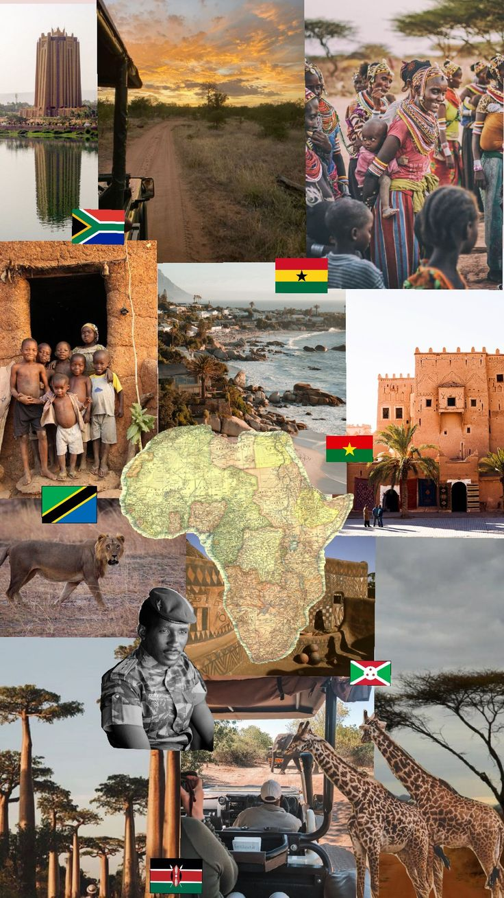

The Rich Tapestry of African Diversity: A Celebration of Cultures, Languages, and Traditions** Africa, often described as the cradle of humanity, is a continent renowned for its incredible diversity. From the bustling markets of Lagos to the serene landscapes of the Sahara, Africa's vast array of cultures, languages, and traditions forms a rich and vibrant mosaic that reflects the continent's deep historical roots and dynamic present.
Cultural Diversity
Africa is home to over 1,500 distinct ethnic groups, each with its own unique traditions, practices, and ways of life. This cultural diversity is evident in the continent's festivals, music, dance, art, and daily customs. For example, the Maasai people of East Africa are renowned for their distinctive beadwork and traditional dances, while the Yoruba people in West Africa are known for their elaborate ceremonies and vibrant festivals like the Osun-Osogbo.
The cultural practices of African communities are deeply intertwined with their environment and history. The San people of Southern Africa, one of the continent’s oldest cultures, have rich oral traditions and a profound knowledge of the land that has been passed down through generations. Meanwhile, the Berber communities in North Africa have preserved ancient traditions in the face of modern influences, showcasing a blend of history and contemporary life.Linguistic Diversity
One of the most striking aspects of African diversity is its linguistic richness. The continent is home to over 2,000 languages, grouped into several major language families: Afroasiatic, Nilo-Saharan, Niger-Congo, and Khoisan. Swahili, Hausa, and Amharic are among the most widely spoken languages, but many African languages are spoken only by smaller communities, reflecting the continent’s linguistic complexity. Languages in Africa are not just tools for communication but are also carriers of cultural identity. They reflect social structures, spiritual beliefs, and historical experiences. For instance, the Bantu languages, spoken across Central, Eastern, and Southern Africa, are a testament to the continent's historical migrations and interactions.
Religious Diversity
Religion plays a central role in many African societies, and the continent’s religious landscape is as diverse as its cultures and languages. Africa is home to a variety of faiths, including Christianity, Islam, traditional African religions, and a growing number of people identifying with non-religious beliefs or new religious movements. In West Africa, for example, traditional African religions are deeply rooted in the daily lives of the people, with practices and rituals that honor ancestors and nature. In contrast, Northern Africa is predominantly Muslim, with Islamic practices influencing cultural norms and societal structures. In Southern Africa, Christianity has a significant presence, often blended with traditional beliefs and practices.
.jpg)
Economic and Social Diversity
the economic and social conditions across Africa are equally diverse, ranging from bustling urban centers to remote rural areas. The continent's economies vary from the high-tech industries in cities like Nairobi and Johannesburg to the agriculture-based economies in rural areas. Social structures and living standards can differ dramatically within and between countries, influenced by historical, political, and economic factors.
Challenges and Opportunities
Despite its rich diversity, Africa faces challenges related to inequality, conflict, and economic development. However, the continent's diversity is also a source of strength and resilience. It fosters a wide range of innovative solutions and approaches to development, education, and governance. African nations are increasingly leveraging their diverse cultures and languages to build inclusive societies and promote sustainable growth.
Conclusion
The diversity of Africa is not just a feature but a fundamental aspect of its identity. It enriches the continent’s cultural fabric, shapes its social dynamics, and influences its economic and political landscapes. Understanding and celebrating this diversity is crucial for appreciating Africa's past, present, and future. As the continent continues to evolve, its diverse heritage will undoubtedly play a central role in shaping its path forward, offering invaluable lessons in unity and adaptability to the world at large.

 Spirituality and religion are deeply intertwined with African heritage. Traditional African religions, which vary widely across regions, often involve a deep reverence for ancestors and nature. Rituals and ceremonies are performed to honor the spirits, seek guidance, and maintain harmony with the environment. For instance, the Gede Festival in Nigeria and the Umhlanga Reed Dance in Eswatini are significant cultural events that involve rituals connecting participants with their ancestors and community values.
Spirituality and religion are deeply intertwined with African heritage. Traditional African religions, which vary widely across regions, often involve a deep reverence for ancestors and nature. Rituals and ceremonies are performed to honor the spirits, seek guidance, and maintain harmony with the environment. For instance, the Gede Festival in Nigeria and the Umhlanga Reed Dance in Eswatini are significant cultural events that involve rituals connecting participants with their ancestors and community values.


 deep cultural roots that continue to shape and enrich African societies, providing a sense of continuity and connection amidst the rapid pace of change.
deep cultural roots that continue to shape and enrich African societies, providing a sense of continuity and connection amidst the rapid pace of change.